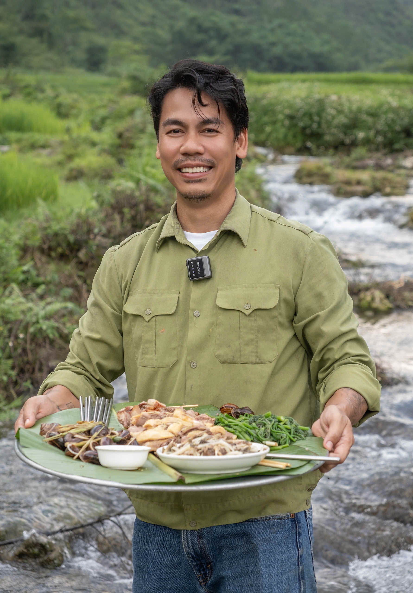
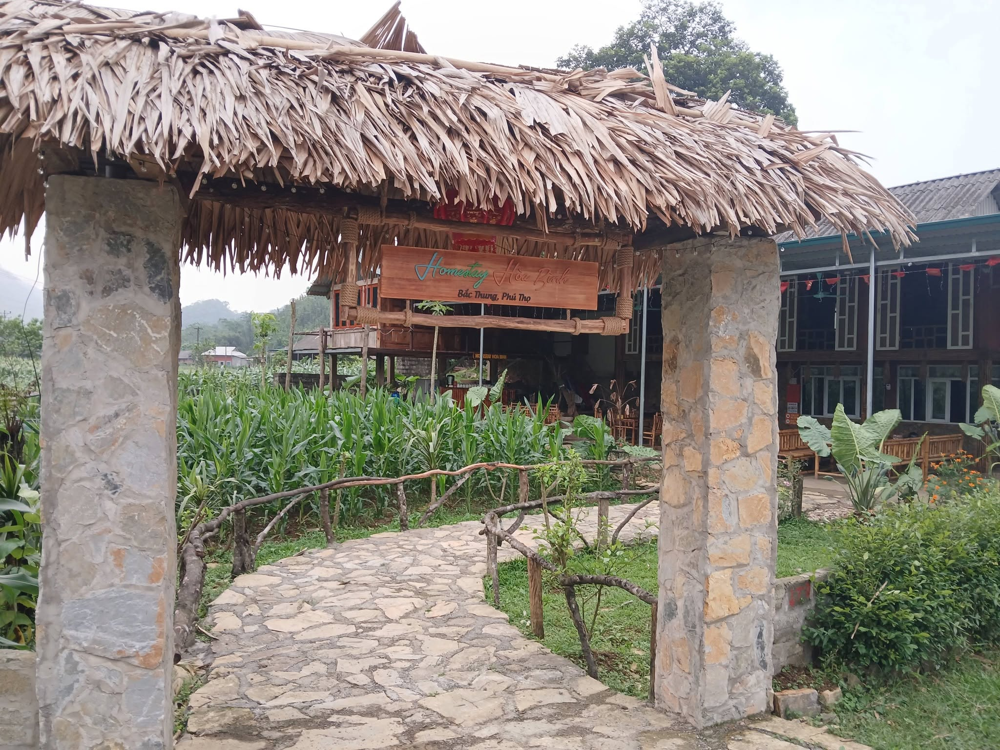
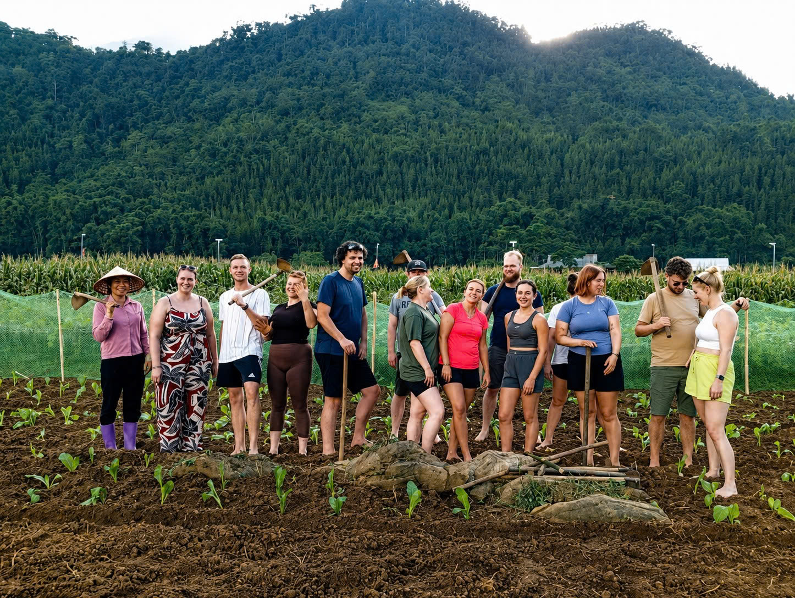
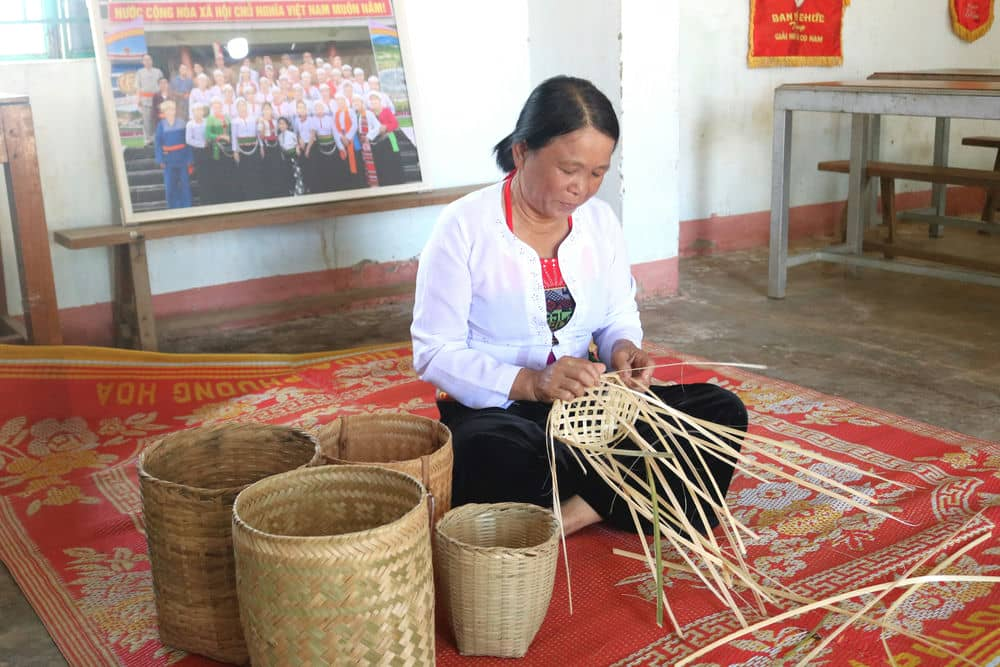
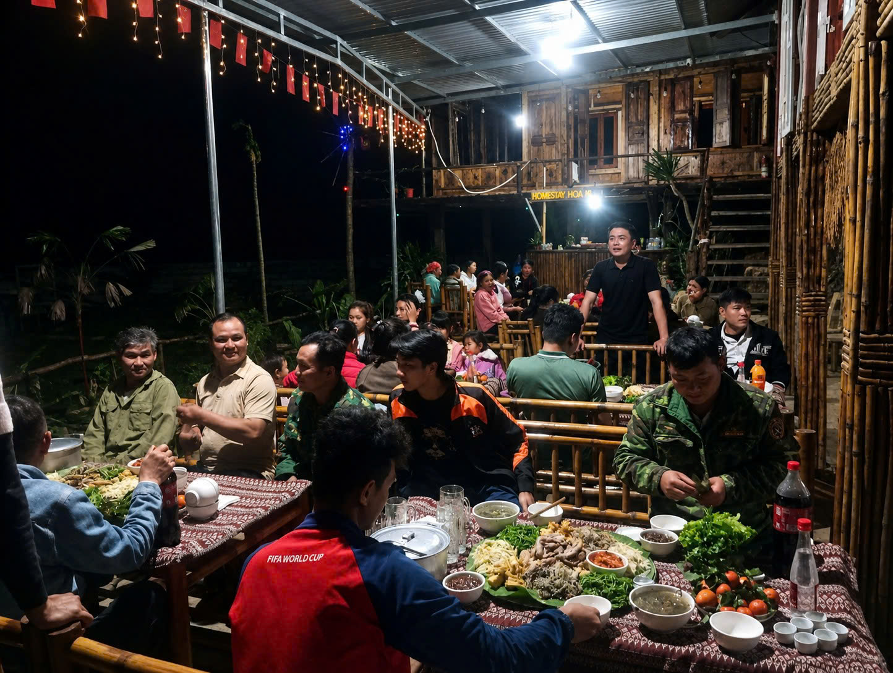
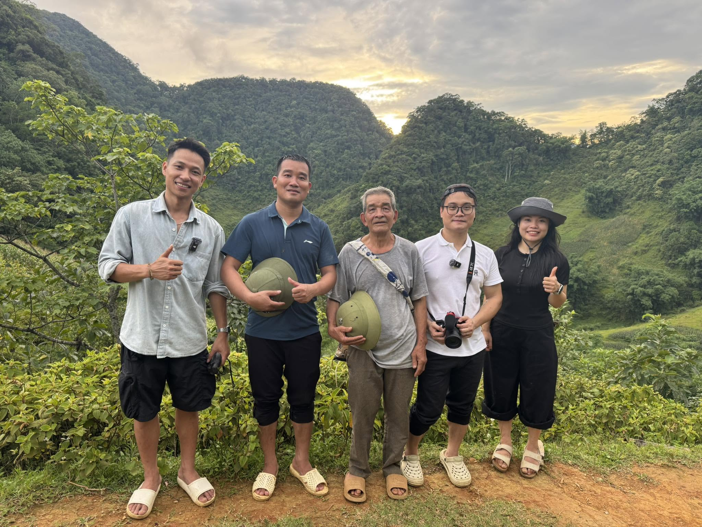

Điều Vân Sơn (Phú Thọ) thiếu suốt nhiều năm không phải là cảnh đẹp hay bản sắc văn hóa mà là cơ hội để những giá trị ấy được nhiều người biết đến. Khi công nghệ số trở thành cầu nối giữa bản làng và du khách, một hướng phát triển mới đang dần hình thành trên vùng đất này.
Miền đất nhiều tiềm năngtìm đường ra thị trường
“Chợ phiên trên mây” là một trong những nét văn hóa đặc sắc của cộng đồng người Mường tại Vân Sơn.
Chỉ trong vài tháng, những video ngắn về cuộc sống của người Mường, về cánh đồng susu hay thác Thung đã giúp nhiều du khách lần đầu biết đến Vân Sơn. Một số homestay bắt đầu đón khách, người dân mạnh dạn tính chuyện làm du lịch và chính quyền địa phương cũng từng bước xây dựng mô hình “làng số”.
Ít ai biết rằng trước đó, dù sở hữu nhiều tiềm năng về cảnh quan, văn hóa và nông sản, Vân Sơn vẫn là cái tên khá xa lạ trên bản đồ du lịch. Thác Thung, bãi Pặng, nghề đan lát truyền thống hay những sản vật địa phương như gạo Đài Thơm 8, susu, ly vàng là những nét riêng tạo nên bản sắc của vùng đất này.
Tuy nhiên, suốt nhiều năm, phần lớn những giá trị ấy vẫn chưa được khai thác tương xứng với tiềm năng vốn có.

Bùi Hùng Sơn
Tết năm nay, sau nhiều năm học tập, công tác và kinh doanh tại Hà Nội rồi TP. Hồ Chí Minh, anh quyết định trở về quê hương.
“Ở trên này có rất nhiều tiềm năng về du lịch nhưng chưa được nhiều người biết tới. Tôi nghĩ cần có những người đứng ra quảng bá hình ảnh địa phương để du lịch phát triển hơn”.
Cánh đồng susutrên nền tảng số
Clip truyền thông do anh Sơn và cộng sự thực hiện, biến một sản vật quen thuộc thành câu chuyện có thể lan tỏa trên mạng xã hội.
Từ suy nghĩ đó, anh bắt đầu thử sức với các nền tảng mạng xã hội. Những video ngắn giới thiệu cuộc sống của người Mường, cảnh sắc địa phương hay những ý tưởng gần gũi như: “Vân Sơn có loại quả gì ăn xong phải xin thêm?” lần lượt được đăng tải với mong muốn đưa hình ảnh quê hương đến gần hơn với công chúng.
Theo chia sẻ của anh Sơn, những ngày đầu làm nội dung số là khoảng thời gian đầy áp lực. Anh thừa nhận trước khi đăng video đầu tiên, bản thân gần như mất ngủ vì lo một người gần 40 tuổi liệu có còn theo kịp cách làm truyền thông trên nền tảng số hay không.
Nhưng hiệu quả đến nhanh hơn anh tưởng. Chỉ sau gần hai tháng, hơn 20 video đã giúp hàng trăm du khách tìm đến Vân Sơn, nhiều homestay cuối tuần kín phòng - điều mà trước đây địa phương chưa từng có.

Khơi dậy niềm tinđể đánh thức tiềm năng
Gia đình anh Khánh bắt đầu mạnh dạn đầu tư homestay với kỳ vọng tạo thêm nguồn thu từ du lịch cộng đồng.
Gia đình anh Bùi Văn Khánh là một trong những hộ đầu tiên quyết định nắm lấy cơ hội đó. Nhiều năm gắn bó với nương rẫy, anh chưa từng nghĩ sẽ có ngày ngôi nhà của mình trở thành nơi đón khách du lịch.
“Lúc đầu tôi cũng băn khoăn lắm. Làm homestay phải đầu tư, mà mình chưa biết khách có đến hay không. Nhưng khi thấy khách bắt đầu tìm về Vân Sơn nhiều hơn qua những video của anh Sơn, tôi nghĩ nếu không mạnh dạn làm thì sẽ bỏ lỡ cơ hội của chính quê mình”.
Chỉ khi những đoàn khách đầu tiên xuất hiện, khi người dân tận mắt nhìn thấy cơ hội tăng thêm thu nhập từ chính những giá trị vốn có của quê hương, sự dè dặt ban đầu mới dần được thay thế bằng niềm tin.
Giá trị lớn nhất mà những người tiên phong đang tạo ra chính là niềm tin rằng sinh kế hoàn toàn có thể được tạo dựng từ chính những giá trị bản địa.

Giữ chân du kháchbằng điều không thể sao chép
Du khách nước ngoài trải nghiệm lao động cùng người dân bản địa là một trong những hoạt động được Vân Sơn phát triển.
Việc đưa du khách đến với Vân Sơn mới chỉ là bước khởi đầu. Theo anh Bùi Hùng Sơn, điều quyết định một điểm đến có thể phát triển lâu dài hay không nằm ở những trải nghiệm mà du khách chỉ có thể tìm thấy tại chính nơi đó.
Một hành trình hai ngày một đêm tại Vân Sơn có thể bắt đầu bằng trải nghiệm săn mây vào sáng sớm, tham quan chợ phiên Bò vùng cao vào thứ ba và chủ nhật, thưởng thức các món ăn truyền thống, khám phá thác Thung hay bãi Pặng, giao lưu văn nghệ buổi tối và tham gia các hoạt động nghề thủ công cùng người dân địa phương.
Chị Nguyễn Thị Hồng Hạnh (Hà Nội) bày tỏ sự thích thú: “Tôi từng đi khá nhiều điểm du lịch nhưng ở đây tôi có cảm giác được hòa vào cuộc sống của người dân hơn là chỉ đến tham quan”.
Khách sẽ được trải nghiệm luôn và những ông bà ấy sẽ là người trực tiếp dạy cho khách du lịch làm nghề truyền thống.


Khi cả bản làngcùng bước lên không gian số
Lượng du khách tìm đến Vân Sơn tăng lên sau khi các nội dung quảng bá địa phương được lan tỏa trên nền tảng số.
Những tín hiệu tích cực từ các mô hình tiên phong đang dần tạo ra sự lan tỏa trong cộng đồng. Theo anh Bùi Hùng Sơn, đến nay khoảng 20 trong số gần 30 hộ dân ở xóm Bắc Thung đã bày tỏ mong muốn tham gia phát triển homestay.
Trước đây, nhiều gia đình Mường còn e ngại việc đón khách lưu trú vì người lạ sẽ sinh hoạt chung trong ngôi nhà có không gian thờ cúng tổ tiên. Nhưng sau nhiều cuộc trao đổi, vận động và khi nhìn thấy những tín hiệu tích cực từ các mô hình đầu tiên, các bậc cao niên trong bản cũng dần đồng thuận với hướng phát triển du lịch cộng đồng.
Ông Nguyễn Duy Tư, Bí thư Đảng ủy xã Vân Sơn chia sẻ: “Hiện nay tôi đang trực tiếp hướng dẫn một số chủ homestay xây dựng nội dung số, quảng bá dịch vụ và hình ảnh địa phương. Tôi muốn chính họ trở thành những người truyền cảm hứng để nhiều hộ dân khác cùng tham gia”.

Từ góc nhìn của chính quyền, chuyển đổi số chỉ thực sự phát huy hiệu quả khi mỗi người dân trở thành một “đại sứ” quảng bá cho quê hương.
Đồng chí Tư (thứ hai từ trái qua) cùng chính quyền địa phương kỳ vọng mỗi người dân có thể quảng bá hình ảnh quê hương trên không gian số.Hành trình ấy mới chỉ ở những bước đầu tiên. Nhưng một hướng phát triển mới đang từng bước hình thành trên vùng đất Vân Sơn. Tại đây, không gian số đưa hình ảnh bản làng đi xa hơn và kéo những cơ hội sinh kế đến gần hơn quê hương vùng cao.